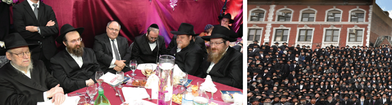

Joining Forces to Bring Moshiach
Thousands of shluchim of the Rebbe, from all across the globe, arrived in Crown Heights for the Kinus HaShluchim held in 770, and made a joint resolution to neither rest nor remain silent until the complete Hisgalus. * Five days straight of spiritual experiences and uplift, along with lectures and workshops, all with one goal: to improve and succeed in the only remaining shlichus to “greet Moshiach in actual fact.” * A brief overview of the amazing atmosphere, the stories shared, the discussions held, and the exquisite banquet on Motzaei Shabbos.

They were discussing the topic of sh’chita, a topic that is hardly relevant to most Jews in the world, who simply walk into the kosher supermarket near their homes and take the desired poultry or beef, with a proper certification, from the fridge or freezer. In those cases where the store is not all that close, the most it requires is making an order over the telephone or perhaps a reasonable drive to the store.
However, for shluchim operating in third world countries, everything gets a lot more complicated. It is true that they have the option to go vegan and simplify their lives considerably, but that is not the issue. What they are concerned about is the local Jewish community with hundreds, and in some cases thousands, of Jews living there, and the question is whether or not they will have access to kosher food in their homes. This will usually depend on their efforts to obtain meat that is fresh, tasty, of good quality, at a reasonable price, and obviously with the highest kashrus standards.
STORIES FROM THE THIRD WORLD
Around the table, the stories were flowing of life in the most primitive cultures. There was the shliach who found himself surrounded by hundreds of angry Muslims armed with knives, who were claiming that he was corrupting their form of ritual slaughter, until he was forced to pay a “fine” to the owner of the slaughterhouse and run for his life. Then there was the shliach who brought a whole crew of shochtim from Eretz Yisroel to his country, but had to send them right back when the dealer decided to sell all the animals that were already paid for and designated for sh’chita, to somebody else. A third told about a slaughterhouse in India, where thousands of Indians sit and slaughter chickens with a knife that they hold between their legs, and the fourth told about the sh’chita operation that he had managed to set up.
Afterward, the conversation moved to the topic of chinuch. It turns out that shluchim in countries where even the most basic everyday activities, which we take for granted, involve complicated logistics, are also struggling with the same questions and dilemmas that every Chabad parent deals with. How do you raise children on shlichus? It is true that the Rebbe took the children of the shluchim on his shoulders, but this is conditional on the child being raised in a home that provides him with the foundations of proper conduct.
It seems that it is not that simple. One spoke about how he learns with his children each and every day, since the existing virtual school options do not align with the hours that his children are awake. Another speaks of the dilemma as to whether to enroll his children in the existing local Jewish schools, since the level of religiosity leaves a lot to be desired, obviously.
For the shluchim around the world, the kinus is real quality time. A wonderful opportunity to share experiences and to consult with others. Apparently, despite the wonders of technology and the ability to make instant contact that exists today, and even with multiple participants, there is no replacement for a conversation in the hallway, at breakfast or around a table.
At times, it feels like it is these moments that “make” the kinus: such heart to heart conversations, encouraging a shliach that is experiencing a difficult period which can only be fully appreciated by a fellow shliach, or a good piece of advice from personal experience which no coach or expert can offer.
GETTING STARTED
Registration opened at 4:30 pm on Wednesday evening in the large hall in the lobby. Everything was set up to run smoothly and quickly. After having their details inputted into the computer, the shluchim were sent to the next station where they received their tag with their name and the place of their shlichus, along with a nice case containing the program, various publications and writing implements. The long line moved quickly, and within a short time, 770 filled up with shluchim sporting their name tags.
Immediately after Maariv, the shluchim went off to a grand dinner which was the formal opening of the kinus. There they found a bountiful buffet with choice offerings, and as they found their seats, the moderator, R’ Aharon Butbul of the Chabad House in Kiryat Gat started the program. The topic of the evening was based on the verse, “And your beginning will be (painfully) small, and your end will expand greatly.” He pointed out that every Chabad House encounters the difficulties of starting out, but with the blessings of the Rebbe, those difficulties fade away and are followed by great success, and the speakers would be sharing their experiences in facing and overcoming those difficulties.
The first speaker was R’ Yosef Yitzchok Gershovitz of Chaifa, who told about the challenges he faced in his upscale community facing various interest groups that tried to block his efforts, and how the lot in which he would set up his tent that served as a shul was purchased by an investor who refused to allow him to use the place, and how the challenge itself led to great success. The next speaker was R’ Eliyahu Chaviv of Addis Ababa, Ethiopia. “They asked me to share about the early stage hardships,” he said with a big smile, “but what can I do if there were no hardships.” He then shared the string of divinely orchestrated events and how those events unfolded, which brought a young couple to leave everything behind and head off to a truly foreign place like Ethiopia.
The next speaker, R’ Mendel Turen of Springfield, Illinois, spoke about how he had decided to materialize his dream of shlichus already as a bachur, and how he used all his vacation time from yeshiva to begin working in the capital city of his home state, which never had a shliach. He described how he worked using old time tactics, such as looking up Jewish names in the local phone book, and planting seeds over the years, which are now starting to show signs of growth as an actual community begins to take form.
The final speaker of the evening was R’ Yosef Yitzchok Kupchik of La Paz, Bolivia, who shared some fascinating stories about his shlichus in the capital city of Bolivia.
A FULL DAY
Thursday, 27 Cheshvan, was the first full day of the kinus. It started with an early morning Chassidus class in 770, given by R’ Yosef Taib, followed by davening at 10 am with the Rebbe’s minyan.
After the davening, the shluchim went to the main hall in the Eshel building for a luxurious buffet breakfast. Sitting around the circular tables, one could see mini reunions with family, friends, and classmates. These encounters are actually an integral part of the kinus experience, and the organizer of the workshops, R’ Zalman Bernstein, had to circulate among the tables to remind the shluchim to hurry downstairs for the first series of workshops.
The first workshop dealt with the topic of “Order and Organization – Tools for Success on Shlichus.” R’ Chaim Brod of Playa del Carmen in Mexico, spoke about how his Chabad House has really taken off since he undertook to restructure and reorder the organizational elements, “Nothing significant happens overnight, but with a lot of diligence and strict order, it is possible to get far better results.”
The main presenter was Shmuel Harel, a facilitator and consultant on organizational development, who gave a slide presentation with real life solutions to operating and planning in a manner that achieves results.
GETTING THE MESSAGE OUT
The next workshop moved to the hall on the second floor, with the topic being, “Conveying the Message – Ofen Ha’miskabel.” The participants heard from a number of veteran shluchim and rabbis with years of experience in public speaking and addressing diverse audiences. The session was chaired by R’ Betzalel Wilschansky, shliach in Haifa, who introduced the topic and spoke about being able to convey deep messages with the proper preparation. The speakers were: R’ Avrohom Haronein, the rav of the “City Center” of Kfar Saba, R’ Yosef Chaim Rosenblatt, the regional rav of the Lower Galilee, and R’ Daniel Shahino, rav of the “Rashbi community” in Fort Lauderdale, Florida.
After the session, everyone headed to Mincha with the Rebbe, where the crowding was more pronounced as new arrivals keep coming. Then back again for a halacha workshop with R’ Yosef Yeshaya Braun of Crown Heights, who held the crowd spellbound for quite some time with examples of complex halachic questions that shluchim encounter, and how to deal with them.
He was followed by R’ Michoel Avishid of the Machon Halacha Chabad, on the topic of the laws of mourning, and R’ Yaakov Chaviv, on the topic of dealing with rabbis from other streams of Judaism that try to create difficulties for the work of Chabad. According to him, “There is no need for getting into debates. It does not help in the least. Sometimes, a simple meeting with the rabbi in question or his rabbi that he looks up to, who is truly knowledgeable in Torah, can resolve all the issues.”
The main session of the day, which took place in the evening in the hall of Lubavitcher Yeshiva, along with dinner, was on the topic of “Greeting Moshiach,” and was emceed by R’ Levi Liberow. The speakers included: R’ Yaakov Bitton of France, R’ Yosef Abelsky of Moldava, R’ Boruch Levkivker of Tzfas, R’ Chaim Nisselevitz of Yerushalayim, and R’ Mati Tochfeld.
THE BANQUET
Obviously, the main event of the kinus was always the farbrengen with the Rebbe on Shabbos afternoon, which served as the official beginning of the kinus over the years. As always, the room was set up for the farbrengen, with the shluchim sitting at the long tables and singing, experiencing those moments of rising above worldly concerns, and eagerly awaiting the return of the one they serve as emissaries.
The other traditional high point is the banquet, which was held on Motzaei Shabbos in 770, as it has been in recent years. At the appointed time of 9:00 pm, the doors opened and the long line of shluchim that had already formed outside began streaming in. Each shliach presented his tag, which was scanned in order to automatically be entered into the big raffle that would be held.
The entire room was set up beautifully, and as the shluchim washed their hands and took their places, they were treated to background music played by R’ Yossi Cohen, with R Mordechai Brodsky on the violin. At exactly 9:30 pm, as listed on the program, the emcee, R’ Yosef Tzvi Carlebach, shliach in Rutgers in New Jersey, went up on the stage to begin the program. Quoting the famous expression that “one opens with the word of the king,” all were asked to give their attention to the short video of the Rebbe speaking about the shluchim. After the sicha, there was a video of the Rebbe encouraging the singing of “Yechi,” images which are engraved forever in all our hearts and minds, and which give the shluchim the confidence and certainty that no word of the Rebbe will go unfulfilled.
R’ Shneur Zalman Eliyahu Hendel, the father of the recently departed shlucha Chani Segal a”h of Rishon L’Tziyon, was called up to read the Rebbe’s chapter of T’hillim.
KEEPING THE FAITH IN THE FAITHFUL SHEPHERD
The first speaker was R’ Menachem Mendel Wilschansky, Rosh Yeshiva of Yeshivas Chabad and shliach in Haifa, who spoke powerfully about the proper loyalty and devotion to the leader and Moshiach of the generation based on the verse, “And they believed in Hashem and His servant Moshe,” while sharing a number of moving personal encounters.
Next, R’ Aharon Yaakov Schwei of the Badatz of Crown Heights offered words of blessing, and this was followed by an acknowledgment of the special role of the Chassidic philanthropist, R’ Sholom Dovber Drizin, in financing the kinus. The emcee blessed R’ Drizin, in the name of all the shluchim, with material and spiritual success for length of days and good years.
Regards from Eretz Yisroel were offered by Mr. Danny Dayan, the Consul General in New York and former head of the Yesha Council. He spoke about his personal experiences from davening Mincha in 770 almost forty years ago, and also spoke passionately about how Eretz Yisroel belongs to the Jewish nation and the role of the shluchim as defenders of the land.
The following speaker was R’ Yosef Yeshaya Braun of the Badatz of Crown Heights, who reminded the assembled of how the Rebbe opened the farbrengen during the kinus of 5752, by defining the sole remaining shlichus as preparing the world to greet Moshiach. He also spoke about the significance of it being forty years since Rosh Chodesh Kislev 5738, citing a fascinating report about head reattachment surgery, and the lesson that we need to learn from it, “Since from the Rebbe’s perspective, there is never a separation between him, the head, and the body. However, we need to ask ourselves if we are truly connected to the head.”
THE REBBE IMPACTED MY LIFE
One of the fascinating speakers of the evening was Mr. Georgiy Logvynsky, a Jewish member of the Ukrainian Parliament. He shared his exciting and extraordinary life story as a Chernobyl survivor, and the impact that the Rebbe had on his life. “Not long ago, I was at a meeting with Prime Minister Binyamin Netanyahu, and I told him that we had something in common, in that we both merited to receive the blessing of the Lubavitcher Rebbe, which impacted our lives.”
The final speaker of the banquet was R’ Reuven (Rivi) Wolf, a shliach in Los Angeles, who gave an especially inspiring, touching, and encouraging speech, sharing his personal journey to Lubavitch and how he recently “rediscovered” the sichos of the Rebbe on the topic of Moshiach (see full transcript in previous issue).
At the conclusion of the evening there was a grand raffle in which about 100 shluchim won grants of $500 towards the costs of their trip and their work.
FINAL DAY
Sunday was devoted entirely to workshops, which is a key element of the kinus, in that it enables shluchim to join forces and learn from each other. These workshops included: R’ Aryeh Greenberg on building a building for the Chabad House; R’ Zalman Blinitzky on making home visits; R’ Avrohom Meiri on Chabad Houses catering to tourists; and more.
Later in the day, there was a fascinating panel about “Family life, the key to success on shlichus.” The main speaker was Dr. Chanoch Maidovnik, who presented real world solutions to the issues that come up in family life while being intensely involved in outreach work.
He was followed by R’ Shmuel Pesach Bogomilski, who spoke about how institutions are meant to conduct themselves in light of the instructions of the Rebbe.
The closing session focused on the forty-year anniversary from Rosh Chodesh Kislev, and the speakers included: R’ Dovid Nachshon, director of Chabad Mobile Tanks in the Holy Land; R’ Yitzchok Goldstein of Madrid, Spain; R’ Menachem Mendel Hendel, director of the International Chabad Center to bring Moshiach; and others.
The kinus concluded with a farbrengen to celebrate the auspicious day, with the theme being to fortify themselves in the only shlichus that remains, “to greet Moshiach.”
Beis Moshiach (staff). "Joining Forces to Bring Moshiach." Beis Moshiach, no. 1096 (December 5, 2017).